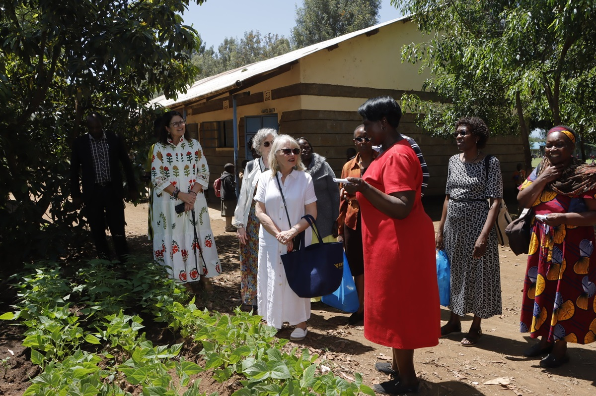
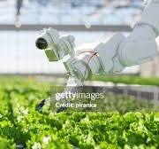

Campus Life
Campus life within the Faculty of Agriculture offers students a dynamic environment filled with learning, growth, and memorable experiences. Whether you're engaging in academic activities, joining student clubs, or participating in cultural events, there's something for everyone.

Annual Agriculture Expo
A vibrant expo where students present projects, innovations, and agricultural demonstrations to the university community and industry visitors.

Sports & Recreation
Students can join sports teams, fitness clubs, and recreational groups that promote health and teamwork outside the classroom.

Cultural Nights & Talent Shows
An opportunity for students to celebrate diversity and creativity through dances,music, drama, and artistic showcases.

Green Innovation Hackathons
Team-based challenges where students develop sustainable solutions for real agricultural and environmental problems.
Student Clubs
Clubs are an amazing way to network, gain skills, and share ideas with like-minded students.

Agribusiness Club
Learn how to turn farm ideas into profitable ventures through agribusiness training, farm visits, and business pitch events.

Green Earth Society
Focused on tree planting, campus clean-ups, and climate action campaigns to promote sustainable agriculture.

AgriTech Innovators
A space for coding, building IoT prototypes, and using AI to solve real farm problems such as irrigation and pest control.

Debate & Public Speaking Club
Grow your confidence through debates, panel discussions, and presentation clinics centered around food security topics.
Register for a Club
Events & Competitions
Explore engaging events that connect students with hands-on agricultural innovation, real-world challenges, and vibrant campus experiences.

Annual Agriculture Innovation Fair
A showcase of groundbreaking student projects and agricultural technologies. Participants receive mentorship from leading experts.

Student Debate on Sustainable Farming
A competitive debate where students argue innovative environmental and agricultural ideas for future food systems.

Farm-to-Table Cooking Competition
A fun and educational competition promoting creativity in transforming fresh farm produce into nutritious meals.
Agriculture Hackathon 2025
A 48-hour collaborative event where students design digital solutions for real agricultural challenges.
Internships
Internships prepare our students for careers in agriculture, research, and innovation.
Research Institute – Crop Trials
Work with senior scientists in field trials, data recording, and reporting on crop performance.
AgriTech Startup – Data & Apps
Help build dashboards, manage farm datasets, and test mobile apps used by farmers.
Food Processing Plant – Quality
Join a quality assurance team to test samples, check standards, and understand food safety workflows.
Ministry – Extension Services
Support extension officers in visiting farmers, training groups, and documenting field challenges.
Internship Application
Student Research Projects
Our students actively participate in research that addresses real-world agricultural challenges.

Climate-Resilient Maize Trials
Testing new maize varieties that can withstand irregular rainfall and extended dry spells.

Solar-Powered Smart Irrigation
Combining solar panels and soil moisture sensing to reduce water wastage in smallholder farms.
Scholarships
Explore top funding opportunities that support students in agricultural sciences, research, innovation, and community development.

Excellence in Agriculture Scholarship
Awarded to outstanding students who demonstrate strong academic performance and commitment to sustainable agriculture.

Women in Science Award
Supports female students pursuing STEM-related agricultural fields, empowering future innovators.